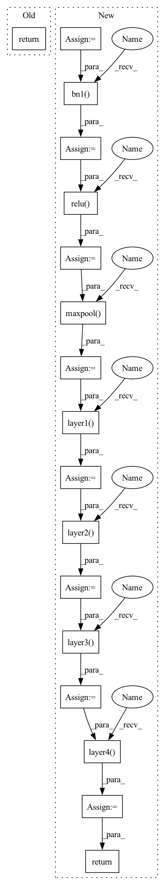

Pattern ID :17503

Before Change
return x
def forward(self, x: Tensor) -> Tensor:
return self._forward_impl(x)
def resnet18_ms(num_classes=10, num_channels=3):
After Change
nn.init.kaiming_normal_(self.conv1.weight, mode="fan_out", nonlinearity="relu")
def forward(self, x):
x = self.conv1(x)
x = self.bn1(x)
x = self.relu(x)
x = self.maxpool(x)
x = self.layer1(x)
x = self.layer2(x)
x = self.layer3(x)
x = self.layer4(x)
// x = self.avgpool(x)
// x = torch.flatten(x, 1)
// x = self.fc(x)
return x
@property
def out_features(self) -> int:
In pattern: SUPERPATTERN
Frequency: 3
Non-data size: 17
Instances
Fragment ID: 57991772
Project Name: thuml/transfer-learning-library
Commit Name: fa7c99df8a0686d52de576d6a398ba991293a71b
Time: 2022-03-23
Author: 3236488847@qq.com
File Name: tllib/vision/models/image_regression/resnet_multispectral.py
M Class Name: ResNetMS
N Class Name: ResNetMS
M Method Name: forward(2)
N Method Name: forward(2)
M Parent Class: models.ResNet
N Parent Class: nn.Module
M File Name: tllib/vision/models/image_regression/resnet_multispectral.py
N File Name: tllib/vision/models/image_regression/resnet_multispectral.py
M Start Line: 119
M End Line: 120
N Start Line: 22
N End Line: 36
'>
Before Change
def forward(self, x: Tensor) -> Tensor:
// pylint: disable=missing-function-docstring
return self._forward_impl(x)
def resnet50(**kwargs: Any) -> ResNet:
After Change
Returns:
Tensor: Output
x_in = self.conv1(x_in)
x_in = self.bn1(x_in)
x_in = self.relu(x_in)
x_in = self.maxpool(x_in)
x_in = self.layer1(x_in)
x_in = self.layer2(x_in)
x_in = self.layer3(x_in)
x_in = self.layer4(x_in)
x_in = self.avgpool(x_in)
x_in = torch.flatten(x_in, 1)
return self.fully_connected(x_in)
def resnet50(**kwargs: Any) -> ResNet:
'>
Fragment ID: 57991773
Project Name: aimakerspace/peekingduck
Commit Name: 9bc45686b41e3f581446c4008f3d10c59caa4018
Time: 2022-07-03
Author: ngaitung.kwok@u.nus.edu
File Name: peekingduck/pipeline/nodes/model/mask_rcnnv1/mask_rcnn_files/resnet.py
M Class Name: ResNet
N Class Name: ResNet
M Method Name: forward(2)
N Method Name: forward(2)
M Parent Class: nn.Module
N Parent Class: nn.Module
M File Name: peekingduck/pipeline/nodes/model/mask_rcnnv1/mask_rcnn_files/resnet.py
N File Name: peekingduck/pipeline/nodes/model/mask_rcnnv1/mask_rcnn_files/resnet.py
M Start Line: 373
M End Line: 373
N Start Line: 376
N End Line: 388
'>
Before Change
return x
def forward(self, x: Tensor) -> Tensor:
return self._forward_impl(x)
def resnet18_ms(num_classes=10, num_channels=3):
After Change
nn.init.kaiming_normal_(self.conv1.weight, mode="fan_out", nonlinearity="relu")
def forward(self, x):
x = self.conv1(x)
x = self.bn1(x)
x = self.relu(x)
x = self.maxpool(x)
x = self.layer1(x)
x = self.layer2(x)
x = self.layer3(x)
x = self.layer4(x)
// x = self.avgpool(x)
// x = torch.flatten(x, 1)
// x = self.fc(x)
return x
@property
def out_features(self) -> int:
'>
Fragment ID: 57991771
Project Name: thuml/transfer-learning-library
Commit Name: fa7c99df8a0686d52de576d6a398ba991293a71b
Time: 2022-03-23
Author: 3236488847@qq.com
File Name: tllib/vision/models/image_regression/resnet_multispectral.py
M Class Name: ResNetMS
N Class Name: ResNetMS
M Method Name: forward(2)
N Method Name: forward(2)
M Parent Class: models.ResNet
N Parent Class: nn.Module
M File Name: tllib/vision/models/image_regression/resnet_multispectral.py
N File Name: tllib/vision/models/image_regression/resnet_multispectral.py
M Start Line: 119
M End Line: 120
N Start Line: 22
N End Line: 36